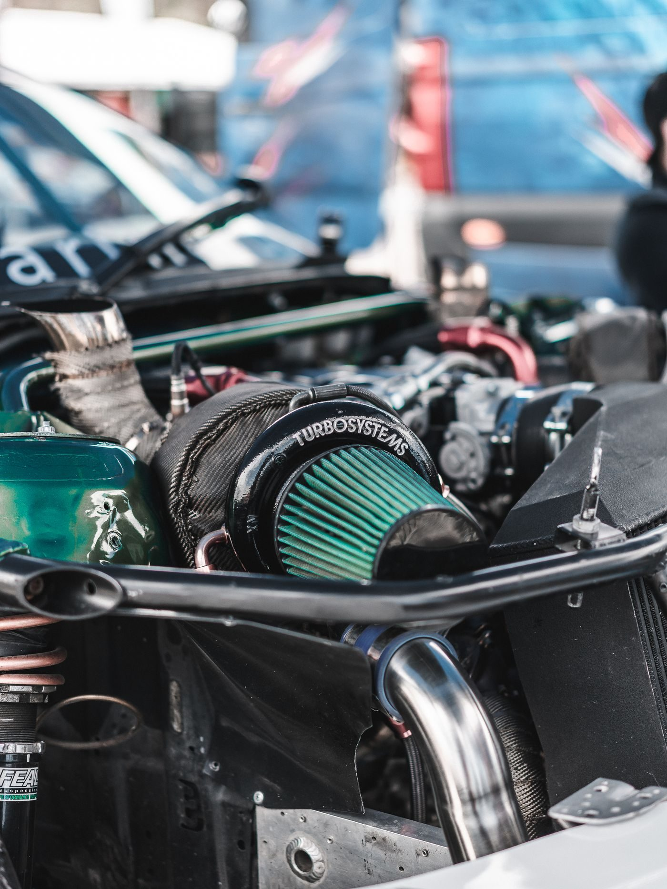

Emge's Carcraft Auto Repair
A St. Louis auto repair shop for general repair, collision and body work, and used car sales.

About
Emge's Carcraft Auto Repair is an auto repair shop in St. Louis, Missouri, at 6235 Gravois Ave. The shop handles general car repair, auto collision and body work, and used car sales.
Services
General car repair
General car repair at the Gravois Ave shop.
Auto collision and body work
Collision repair and body work.
Used car sales
Used cars sold from the shop.
Gallery


All gallery photos are stock photos, labeled as such. They show the kind of work and setting described on this page, not this business.
Visit
Contact
Emge's Carcraft Auto Repair serves St. Louis, MO. Questions? Call +1 314-481-6200.